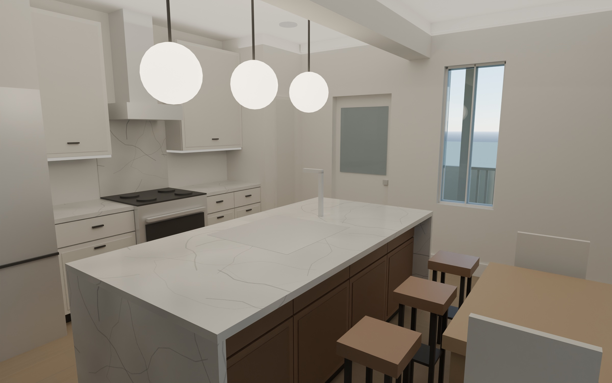

View
Rooms
Layers
Drag to rotate. Right-drag or two fingers to pan. Scroll or pinch to zoom. Click a window to step inside that room; Esc goes back.
What is drawn and what is assumed
- From plans Rear kitchen zone (island, 30" range, dropped beam, pantry, basement stair), rear wall door and windows, right-wall window, the 12' × 8' two-level rear porch, and the 21' building width.
- Your pick Walnut thin-shaker island, white shaker cabinets elsewhere, white marble counters, early American pine floors, Bosch appliance package.
- From photos Front door, paired front window and front porch.
- Concept The existing floor plan (A1.0) is not in the plan set, so the house depth (about 38 ft), all rooms outside the kitchen, the stair, the second-floor layout, furniture and the half bath are my design. They are not in the approved drawings.
- Proposed The half bath shows amber under the highlight button.
Where a half bath fits on this level
- Best spot: the left wall, directly south of the basement stair enclosure. It fits a 5' × 5' room or a 3' × 6' room. Use the Half bath buttons under the 3D view to switch.
- Why there: it sits on the exterior wall for the vent and supply, directly above the basement so the drain can drop straight down, away from the new dropped beam and the island, and the door opens off the living area, so the kitchen sightline stays open.
- Clearances: the 5' × 5' layout gives 2'-7" clear in front of the toilet and 24" to the vanity. The 3' × 6' layout gives 18" each side of the toilet. Both meet the code minimums (21" in front, 15" from the centerline to a wall or fixture).
- Why not under the stair: headroom under the stair drops below 6'-8" over most of its length, so it only works for a closet.
- Before building: the plans do not show existing plumbing. The floor joists run east to west (2×10 at 16" o.c.), so the drain needs a joist bay or a framing detail from the engineer, with no notching. The approved permit excludes plumbing work, so this needs a permit revision. It also needs a 50 cfm fan vented outside.
Renderings

Kitchen. Walnut island, white shaker cabinets, marble, pine floor. Cutaway view. Earlier plan-only view.
Cutaway view. Earlier plan-only view. Kitchen toward the rear wall. Earlier plan-only view.
Kitchen toward the rear wall. Earlier plan-only view.